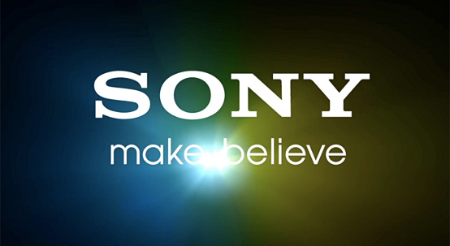
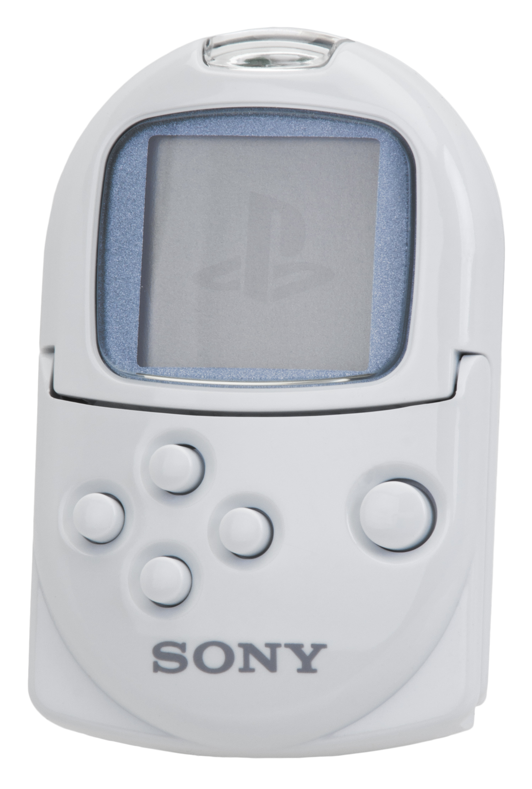
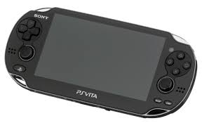
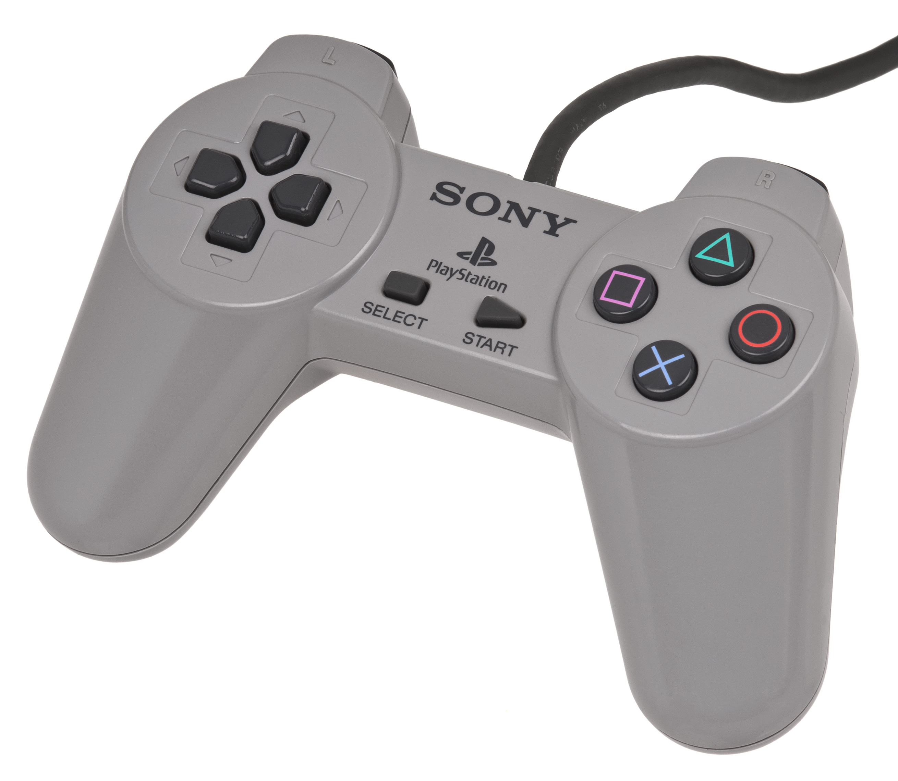
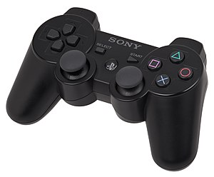
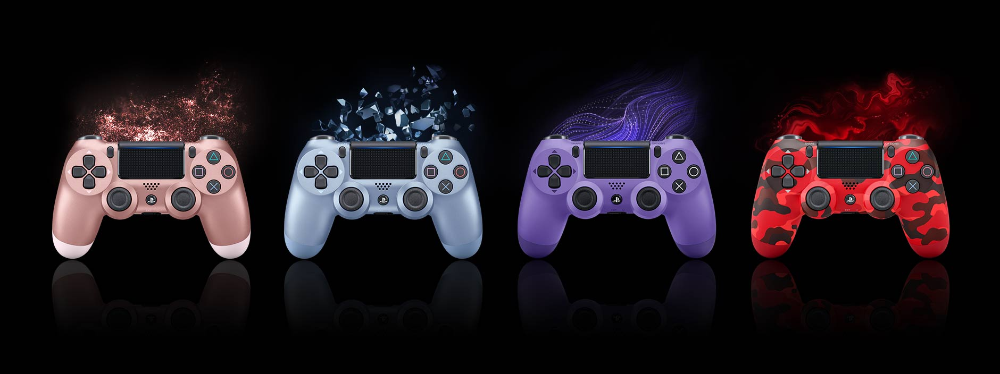
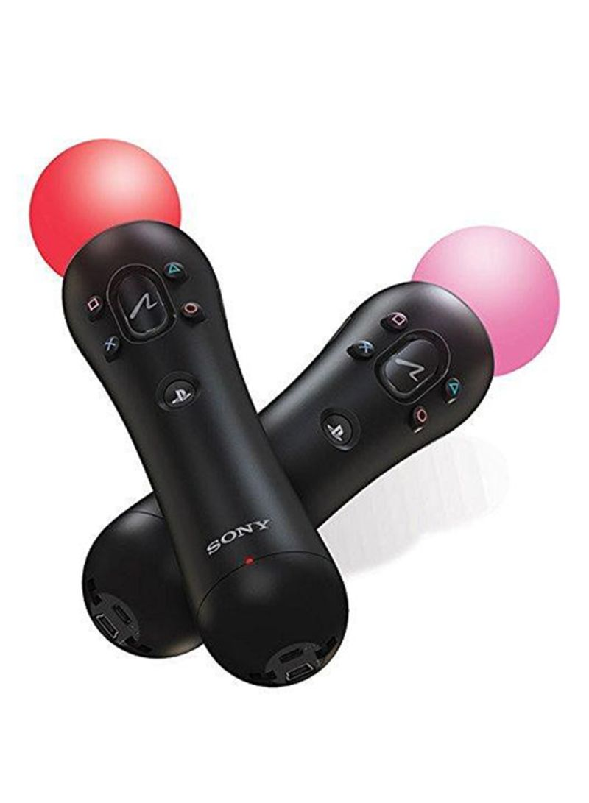

| 
| PlayStation |

|
Handheld Systems
PocketStation

The PocketStation was a miniature game console created by SCE as a peripheral for the original PlayStation. Released exclusively in Japan on December 23, 1999, it featured a
monochrome LCD, a speaker, a real-time clock and infrared communication capability. It could also be used as a standard PlayStation memory card by connecting it to a PlayStation memory card slot.
It was extremely popular in Japan and Sony originally had plans to release it in the United States, but the plan was ultimately scrapped due to various manufacturing and supply-and-demand problems.
PlayStation Portable
 The PlayStation Portable (PSP) was Sony's first handheld console to compete with Nintendo's DS console. The original model (PSP-1000) was released in December 2004.
The console is the first to utilize a new proprietary optical storage medium known as Universal Media Disc (UMD), which can store both games and movies. It contains 32 MB of internal
flash memory storage, expandable via Memory Stick PRO Duo cards. It has a similar control layout to the PS3 with its PlayStation logo button and its Triangle ('Triangle'), Circle ('Circle/O'), Cross ('Cross/X') and Square ('Square') buttons in their white-coloured forms.
The PlayStation Portable (PSP) was Sony's first handheld console to compete with Nintendo's DS console. The original model (PSP-1000) was released in December 2004.
The console is the first to utilize a new proprietary optical storage medium known as Universal Media Disc (UMD), which can store both games and movies. It contains 32 MB of internal
flash memory storage, expandable via Memory Stick PRO Duo cards. It has a similar control layout to the PS3 with its PlayStation logo button and its Triangle ('Triangle'), Circle ('Circle/O'), Cross ('Cross/X') and Square ('Square') buttons in their white-coloured forms.
PlayStation Vita

Released in Japan on December 17, 2011 and North America on February 22, 2012, the PlayStation Vita was previously codenamed Next Generation Portable (NGP). It was officially
unveiled by Sony on January 27, 2011 at the PlayStation Meeting 2011. The original model of the handheld, the PCH-1000 series features a 5-inch OLED touchscreen, two analog sticks,
a rear touchpad, Sixaxis motion sensing and a 4 core ARM Cortex-A9 MPCore processor.
The new PCH-2000 series system is a lighter redesign of the device that was announced at the SCEJA Press Conference in September 2013 prior to the Tokyo Game Show. This model is 20%
thinner and 15% lighter compared to the original model, has an additional hour of battery life, an LCD instead of OLED, includes a micro USB Type B port, 1GB of internal storage memory
. It was released in Japan on October 10, 2013 in six colours: white, black, pink, yellow, blue, and olive green, and in North America on May 6, 2014.
The Vita was discontinued in March 2019. SIE president Jim Ryan said that while the Vita was a great device, they have moved away from portable consoles, "clearly it's a business
that we're no longer in now".
Controllers
Early PlayStation Controllers

Released in 1994, the PlayStation control pad was the first controller made for the original PlayStation. It featured a basic design of a D-pad, 4 main select buttons (Green Triangle ,
Red Circle, Blue Cross and Pink Square), and start and select buttons on the face.
'Shoulder buttons' are also featured on the top [L1, L2, R1, R2] (named by the side [L=Left, R=Right] and 1 and 2 [top and bottom]). In 1996, Sony released the PlayStation Analog
Joystick for use with flight simulation games. The original digital controller was then replaced by the Dual Analog in 1997, which added two analog sticks based on the same potentiometer
technology as the Analog Joystick. This controller was then also succeeded by the DualShock controller.
DualShock Series

Released in 1998, the DualShock controller for the PlayStation succeeded its predecessor, the Dual Analog, and became the longest running series of controllers for the PlayStation
brand. In addition to the inputs of the original, digital, controller (Triangle, Circle, Cross, Square, L1, L2, R1, R2, Start, Select and a D-pad), the DualShock featured two analog
sticks in a similar fashion to the previous Dual Analog controller, which can also be depressed to activate the L3 and R3 buttons.
The DualShock series consists of four controllers: the DualShock which was the fourth controller released for the PlayStation; the DualShock 2, the only standard controller released
for the PlayStation 2, and the DualShock 3, the second and current controller released for the PlayStation 3, and the DualShock 4, which went through a massive redesign and is the
default input of the PlayStation 4, and upon release was compatible with the PS3 originally only via USB and eventually with a firmware update, Bluetooth connectivity was enabled.
The Sixaxis was the first official controller for the PlayStation 3, and is based on the same design as the DualShock series (but lacking the vibration motors of the DualShock series of controllers).
Like the Dual Analog, the DualShock and DualShock 2 feature an "Analog" button between the analog sticks that toggles the analog sticks on and off (for use with games which support
only the digital input of the original controller). On the PlayStation 3 Sixaxis and DualShock 3 controllers, the analog sticks are always enabled. Beginning with the Sixaxis, a
'PlayStation button' (which featured the incorporated PS logo and is similar in function to the Xbox 360 "Guide" button) was included on controllers. The PlayStation button
replaces the "Analog" button of the DualShock and DualShock 2 controllers. Pressing the PS button on the PS3 brings up the XMB, while holding it down brings up system options
(such as quit the game, change controller settings, turn off the system, and turn off the controller).

PlayStation Move

PlayStation Move is a motion-sensing game controller platform for the PlayStation 3 video game console by Sony Computer Entertainment. Based on the handheld motion controller wand,
PlayStation Move uses the PlayStation Eye webcam to track the wand's position and the inertial sensors in the wand to detect its motion.
First revealed on June 2, 2009, PlayStation Move was launched in Q3/Q4 2010. Hardware available at launch included the main PlayStation Move motion controller and an optional
PlayStation Move sub-controller. Although PlayStation Move is implemented on the existing PlayStation 3 console, Sony states that it is treating Move's debut as its own major
"platform launch", planning an aggressive marketing campaign to support it.
In addition to selling the controllers individually, Sony also plans to provide several different bundle options for PlayStation Move hardware; including a starter kit with a PS
Eye, a Move motion controller, and a demo/sampler disc, priced under US$100; a full console pack with a PS3 console, DualShock 3 gamepad, PS Eye, and Move motion controller; and
bundles of a Move motion controller with select games.